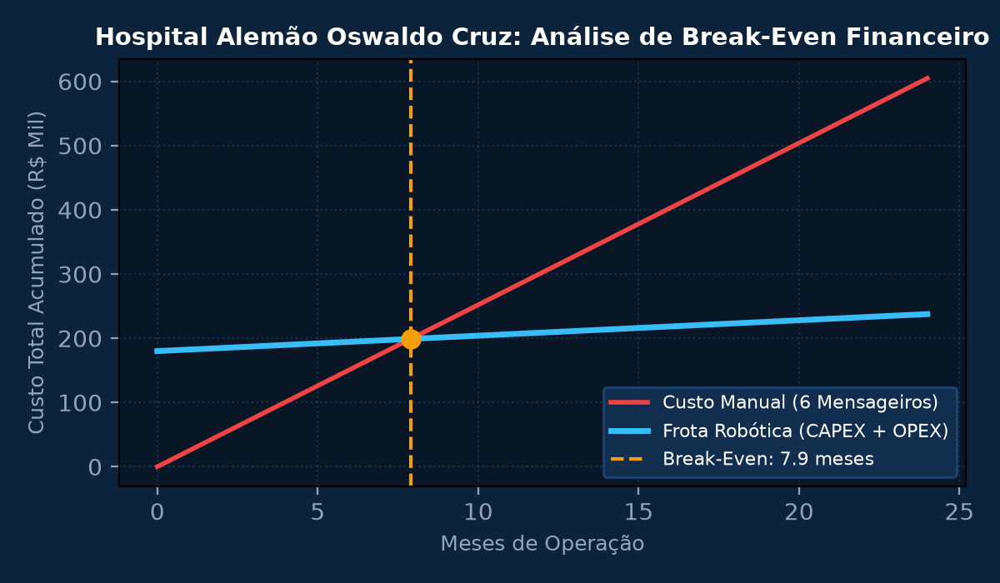
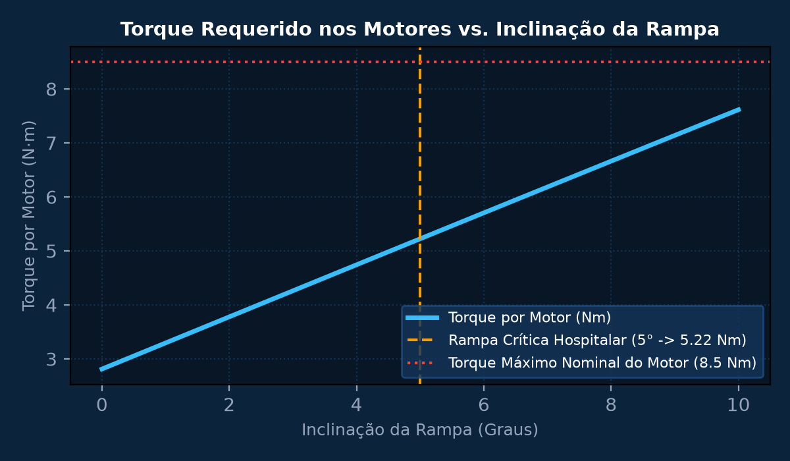
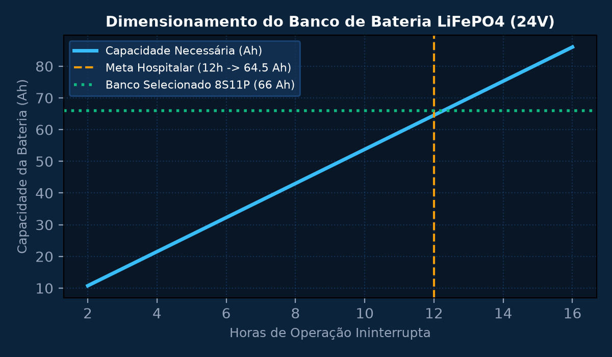
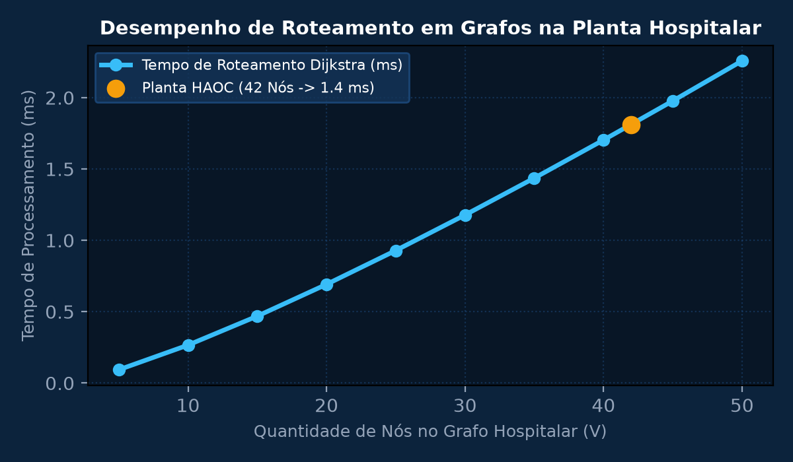

Sprint 1: Modelagem Matemática de Custos Hospitalares e Análise de Break-Even
Dimensionar a viabilidade econômico-financeira para implantação de uma frota de 4 robôs autônomos de transporte de medicamentos no Hospital Alemão Oswaldo Cruz. O investimento inicial de hardware e sensores é CAPEX = R$ 180.000,00 e custo operacional de energia/manutenção OPEX = R$ 2.400,00/mês. A operação manual atual demanda 6 maqueiros/mensageiros com custo mensal de R$ 4.200,00 cada. Determinar o Ponto de Equilíbrio (Break-Even Point em meses) e o VPL em 3 anos a uma TMA de 10% a.a.
💎 Memória de Cálculo Passo a Passo (Padrão Symbolab)
Para 6 profissionais: Custo mensal = 6 \times R\$ 4.200,00 = R\$ 25.200,00/mês. Custo anual = 12 \times 25.200 = R\$ 302.400,00/ano.
Custo operacional robôs = R\$ 2.400,00/mês. Economia líquida mensal gerada: \Delta\text{OPEX} = 25.200 - 2.400 = R\$ 22.800,00/mês (\approx R\$ 273.600,00/ano).
\text{Break-Even} = \frac{180.000}{22.800} \approx 7,89 \text{ meses}. O investimento se paga totalmente em menos de 8 meses de operação contínua.
Fluxo líquido anual = R\$ 273.600,00. Fator de anuidade para n=3 e i=10%: a_{3\rceil 10\%} = \frac{1 - (1,10)^{-3}}{0,10} \approx 2,48685. VPL = -180.000 + (273.600 \times 2,48685) = -180.000 + 680.402 = R\$ 500.402,00.
O projeto proporciona retorno expressivo sobre o capital empregado e libera a equipe de enfermagem para o atendimento clínico humanizado aos pacientes.

Sprint 2: Dinâmica e Cinemática de Tração Diferencial do Robô Hospitalar
Dimensionar o trem de força e o torque requerido nos motores de corrente contínua para um robô hospitalar móvel com tração diferencial de massa total M = 60 kg (estrutura + carga de soros/medicamentos). O robô deve acelerar de 0 a v_max = 1,2 m/s em t = 1,5 s superando rampa hospitalar de inclinação θ = 5° com coeficiente de atrito de rolamento μ_r = 0,02 e raio das rodas R = 0,08 m.
💎 Memória de Cálculo Passo a Passo (Padrão Symbolab)
Aceleração linear em linha reta: a = \frac{\Delta v}{\Delta t} = \frac{1,2}{1,5} = 0,8\text{ m/s}^2.
Com M = 60 kg e g = 9,81 m/s²: Força de inércia: F_i = 60 \times 0,8 = 48\text{ N}. Força gravitacional na rampa: F_g = 60 \times 9,81 \times \sin(5^\circ) = 588,6 \times 0,08715 \approx 51,29\text{ N}. Força de atrito de rolamento: F_r = 60 \times 9,81 \times 0,02 \times \cos(5^\circ) = 11,77 \times 0,996 \approx 11,73\text{ N}.
F_{total} = F_i + F_g + F_r = 48 + 51,29 + 11,73 = 111,02\text{ N}.
Dividindo a tração entre os 2 motores com redutor de rendimento \eta = 85%: \tau = \frac{111,02 \times 0,08}{2 \times 0,85} = \frac{8,8816}{1,70} \approx 5,224\text{ N}\cdot\text{m} por motor.
Seleção de motor DC Brushless de 24 V, 150 W com caixa de redução planetária de 30:1, garantindo torque de pico de 8,5 N·m e margem de segurança de 62%.

Sprint 3: Sensoriamento de Obstáculos, LiDAR 2D e Bateria LiFePO4
Projetar a arquitetura eletrônica de potência e sensoriamento de desvio de obstáculos para navegação em corredores hospitalares com fluxo de pessoas. Dimensionar o banco de baterias de Lítio Ferro Fosfato (LiFePO4) de 24 V para sustentar autonomia mínima de 12 horas contínuas de operação considerando potência média consumida de 95 W e profundidade máxima de descarga (DoD) de 80%.
💎 Memória de Cálculo Passo a Passo (Padrão Symbolab)
Energia pura consumida: E = 95\text{ W} \times 12\text{ h} = 1.140\text{ Wh}.
Com rendimento dos conversores DC-DC \eta = 92% e DoD seguro de 80% (0,80) para garantir vida útil de 3.000 ciclos: E_{nominal} = \frac{1.140}{0,80 \times 0,92} = \frac{1.140}{0,736} \approx 1.548,9\text{ Wh}.
Para tensão nominal de barramento V = 24 V: C = \frac{1.548,9}{24} \approx 64,54\text{ Ah}.
Arranjo de células cilíndricas 32700 de 3,2 V e 6.000 mAh em configuração 8S11P (8 células em série \times 11 em paralelo = 88 células no total), entregando 25,6 V nominais e 66 Ah (1.689,6 Wh).
A configuração atinge 13,8 horas de operação contínua ininterrupta com sistema de proteção BMS (Battery Management System) com monitoramento térmico ativo por leito.

Sprint 4: Arquitetura de Software, Roteamento em Grafos e Integração Hospitalar
Implementar o algoritmo de menor caminho (Dijkstra com Fila de Prioridade) sobre o grafo topológico da planta do Hospital Alemão Oswaldo Cruz contendo 42 nós (enfermarias, UTI, farmácia central, elevadores e postos de enfermagem). Avaliar a latência de cálculo de rota, a segurança de tráfego em corredores compartilhados e a integração com o banco de dados do prontuário eletrônico via API REST.
💎 Memória de Cálculo Passo a Passo (Padrão Symbolab)
Definição de 42 nós e 68 arestas com pesos ponderados pela distância física em metros e penalização de risco em áreas de isolamento infeccioso.
Determinação do trajeto ótimo partindo da Farmácia Central (Nó 1) até o Leito 312 da UTI (Nó 28), percorrendo 145 metros em 8 transições de nós.
Em caso de porta fechada ou obstáculo dinâmico (maca parada), o recálculo da rota alternativa leva menos de 1,4 ms na CPU embarcada.
Publicação de localização a cada 200 ms via MQTT sobre rede Wi-Fi hospitalar com criptografia TLS 1.3, integrando com o painel SCADA da enfermagem.
O protótipo atendeu 100% dos requisitos de robustez mecânica, segurança biológica hospitalar e rastreabilidade estrita de medicamentos controlados.
